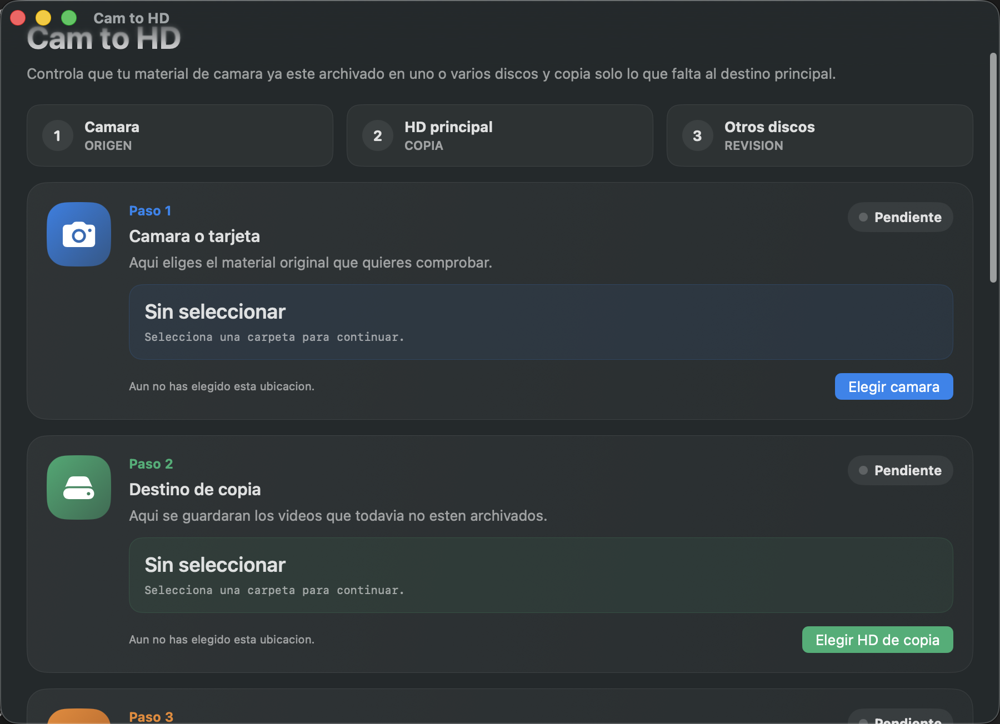

App para Mac
Cam to HD: archiva vídeos de cámara sin duplicados ni caos.
He creado esta app para revisar si el contenido de una cámara o tarjeta ya existe en uno o varios discos y copiar solo lo que falta al destino que selecciones.
macOS 13+
Multi-disco
Cámara → HD
Solo faltantes
Desarrollado por Lisard